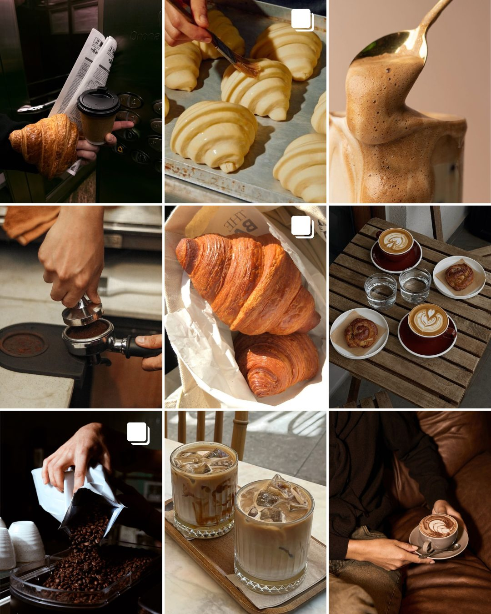
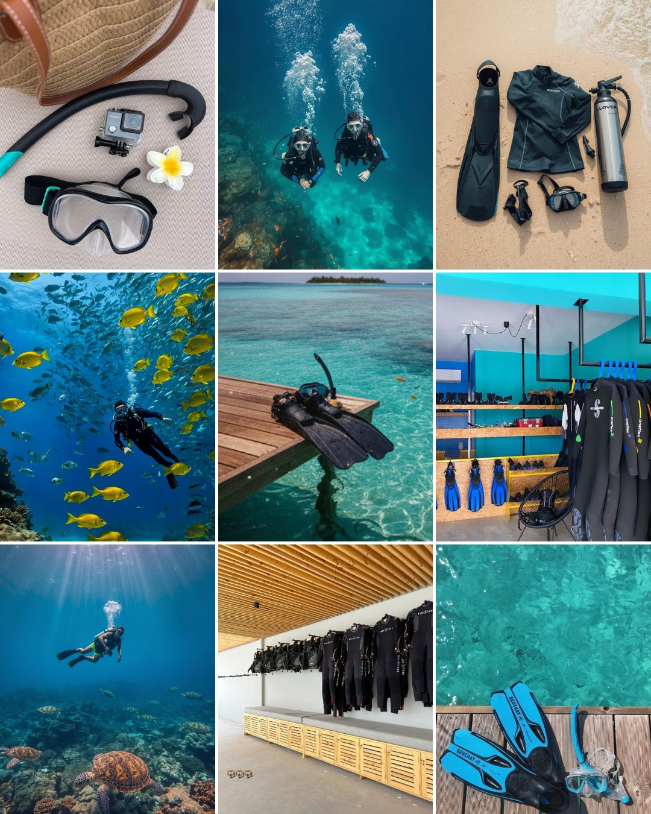
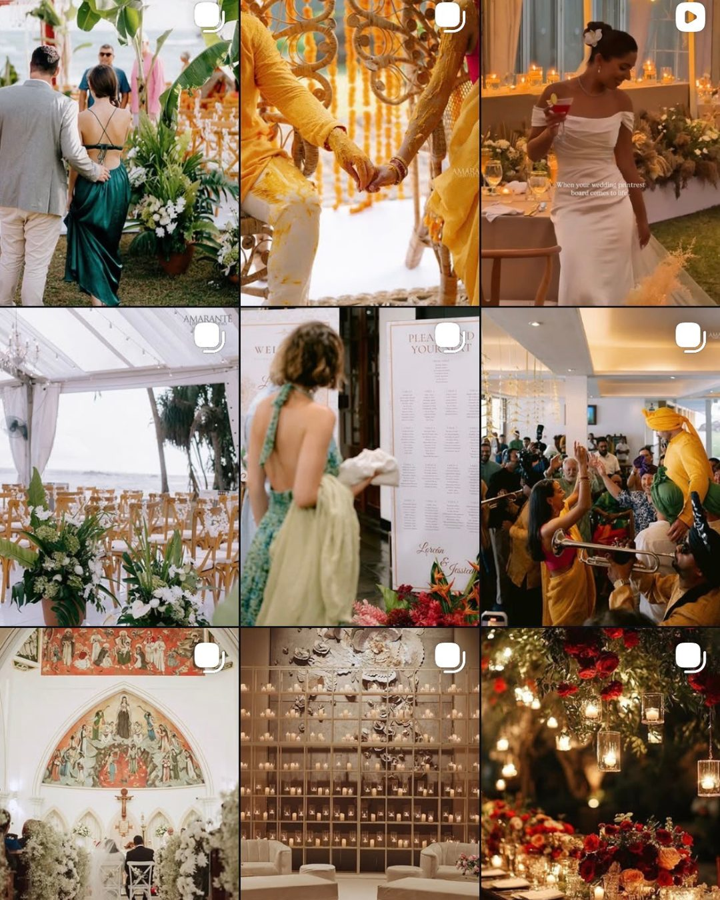
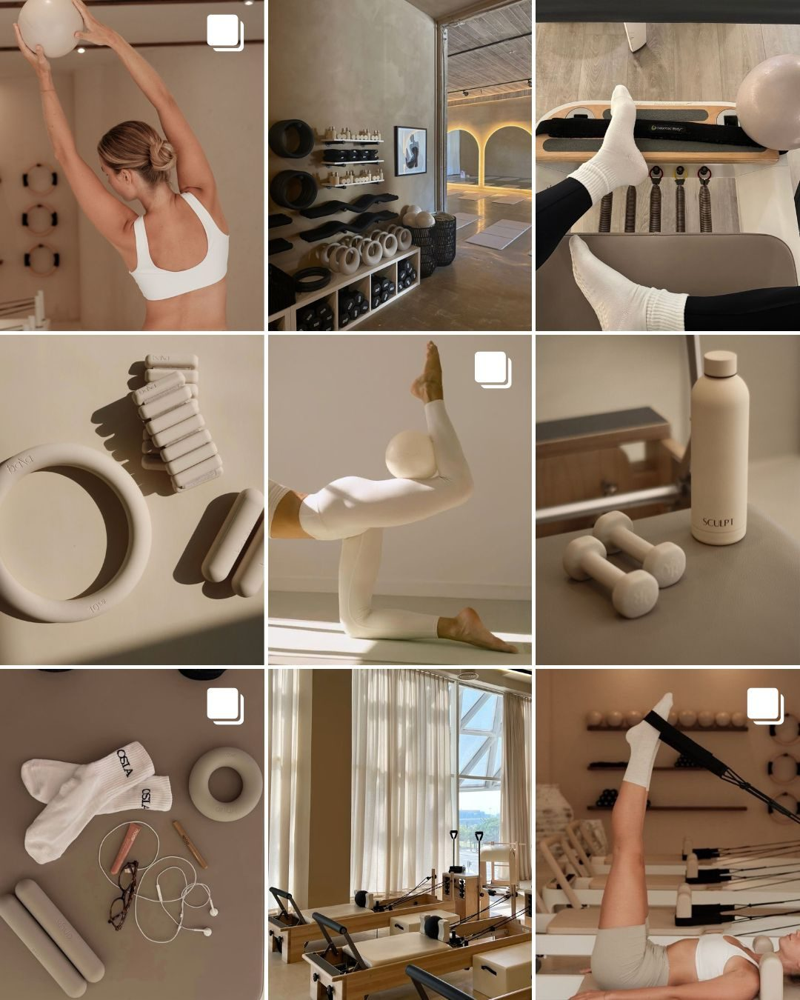

Some are obvious.
Some are expensive.
Most people never notice them.
Every campaign starts as a rough idea. A note. A question. A photograph. A coffee stain.
This is the desk where that happens
Every brand is already telling you what is wrong with it. The photography that repeats. The caption that apologises. The price that hides. I audit what exists before I propose what is next.
the brief is rarely the problemMost brands photograph the finished thing. The interesting frame is usually one step back. The hands. The origin. The decision. That is where memory lives, and memory is the only defensible margin.
taste cannot travel through a screen. point of view canA strategy that stops at the deck is a hobby. Every case here ends in a grid, a sequence, a launch calendar and a page. Things a team can pick up on Monday without a translator.
deliverables, not adjectivesEach file opens the way it was worked. Observation first. Invoice never mentioned.

Built for a café whose feed looked like every café's feed. The fix was discipline, not decoration. One light temperature across all nine cells so the grid reads as a single morning. Hands and process in the corners, the finished cup earning its place only twice. Croissants shot as texture, not as props. The grid sells the ritual of arriving, which is the actual product a café has.
rule: if a competitor could repost it, reshoot it.
A dive school sells a crossing between two worlds, so the grid alternates them. Surface cells carry the calm: gear laid out on sand, fins on the jetty, the equipment room in order. Underwater cells carry the reason: the shoal, the turtle, the diver small against the blue. Order and wonder, side by side. The turquoise is the brand colour and it never needed a logo to claim it.
the gear shots do the trust. the turtles do the selling.
Wedding feeds are usually the couple, posed, repeated. This grid removes the pose. Every cell is taken from where a guest would stand: the walk down the aisle seen from the third row, the haldi hands, the trumpet in the crowd, the candle wall before anyone arrives. Ceremony, celebration and stillness rotate in thirds. A bride does not book the venue in these photographs. She books the feeling of her people inside them.
nobody remembers the centrepiece. everyone remembers the noise.
A premium studio that had been posting like a budget gym. The rebuild is one material world across all nine cells: bone, greige, oat, warm white. Equipment shot as still life the way furniture brands shoot chairs. Reformers in rows read as architecture. The body appears exactly three times, mid movement, never in strain. The palette is the brand, and a follower recognises a post before reading the handle.
no sweat, no before and after, no countdown graphics. ever.Organic only. Not a single unit of paid reach behind any of these.